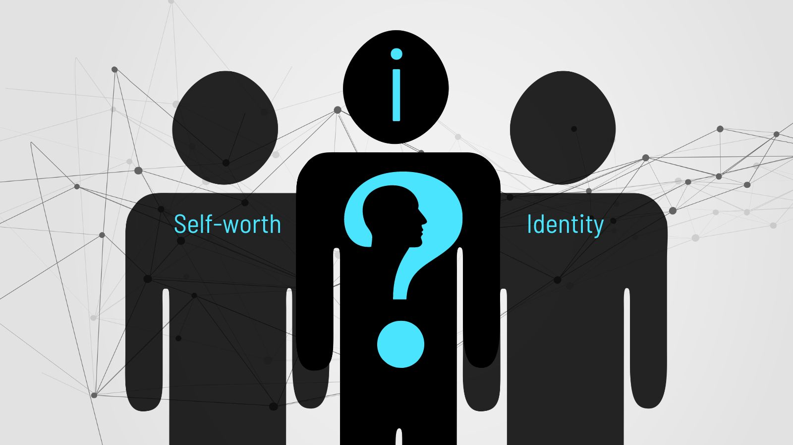

Influence on Self-Identity and Self-Esteem
Social media and digital platforms are powerful forces in shaping how young people see themselves. From curated profiles to follower counts, teens often compare their lives to idealized versions of others — which can deeply impact their self-image and confidence.
- Online Personas: Teens may feel pressure to create a perfect image online, which can cause identity confusion, anxiety, and stress over maintaining appearances.
- Validation Loop: Receiving likes, comments, and shares can give temporary boosts to self-esteem, but lack of engagement can lead to feelings of rejection or low self-worth.
- Positive Role Models: Exposure to diverse and inspiring influencers or peer groups can promote self-expression, creativity, and encourage personal growth.
- Community Support: Finding online communities where teens feel accepted helps foster a sense of belonging, which is critical to healthy identity development.
Understanding how the digital world influences self-perception is essential for nurturing authenticity over perfection. Encouraging teens to embrace their true selves can help them build a stronger, more resilient sense of identity and self-esteem.